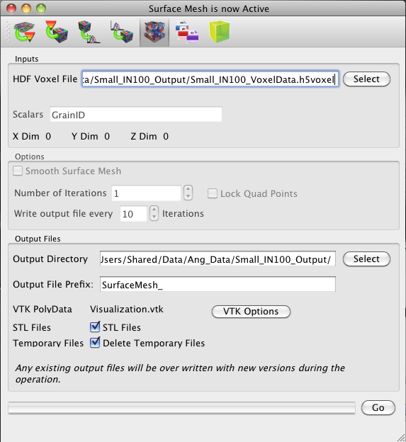

Surface Meshing

- VTK File - name and location of the .vtk file that will be used in the surface meshing
- a. This can be any of the volumes created in the reconstruction or the synthetic builder. The XDim - , YDim and ZDim are the size of the volume (in voxels), read from the input .vtk file.
- Scalars - name of the block of data to read from the input .vtk file. If the volume is from either of the Reconstruction or Synthetic Builder, then this should generally be set to GrainID.
- Output Directory - this is the location that all of the output files will be written to
- a. The output file is a .vtk file of poly data
- Output File Prefix - this option allows the user to define a prefix to place on the output data files (which have a fixed ÔbaseÕ name). The full names of the files will update in real-time on the list of output files.
- Options -
- a. Binary VTK File - This option allows the user to choose whether the output visualization file is in binary or ASCII format.
- b. Conformal Mesh - this option creates a copy of every triangular surface patch if turned on. This option is useful for visualization because when writing poly data in a .vtk file, only one attribute is assigned to each triangle, which negates that two grains actually ÔshareÕ a triangle. If this option is on, then each triangle will be written twice and one will be assigned to one grain and the other to the second grain. If turned off, when the user visualizes one grain at a time by thresholding the data, the grains will appear to having ÔmissingÕ triangular patches.
- c. Delete Temporary Files - this option will delete the temporary nodes and triangles files between all the individual sections once the full volume has been meshed. This option should usually be on since the temporary files are binary and generally not of use to the user after-the-fact.
- Smooth Surface Mesh - this is an option to smooth the surface mesh that is output from the marching cubes portion of the. Currently this option is not functional and is under development with CMU.